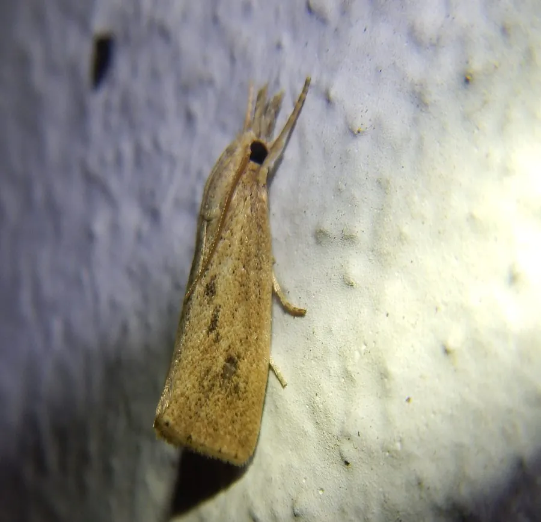

昆虫 · 动物界
二化螟 Chilo suppressalis

水稻的重要钻蛀性害虫，幼虫蛀入茎秆取食，造成枯心和白穗，是中国稻区重点防治的害虫之一。
- 分类
- 门节肢动物门纲昆虫纲目鳞翅目科草螟科属禾草螟属
- 栖息环境
- 水稻田、茭白田和玉米地，幼虫在茎秆内生活
- 地理分布
- 中国各稻区，以及日本、朝鲜半岛和东南亚
- 保护级别
- 暂无评估；水稻重要害虫
物种志
二化螟成虫翅展约 2–3 cm，前翅灰黄褐色，外缘有几个小黑点，后翅白色；雌蛾体型比雄蛾大，腹部末端较粗。幼虫体长约 2–3 cm，头部褐色，身体淡黄白色，体背有几条褐色纵线，老熟幼虫在稻桩或稻草中越冬。
它主要危害水稻，也取食玉米、甘蔗等禾本科作物。幼虫孵化后先群集在叶鞘内取食，造成枯鞘，随后蛀入茎秆，导致枯心和白穗，严重时成片倒伏。二化螟一年发生多代，以老熟幼虫在稻桩中越冬，是中国稻区的重要害虫。防治以处理越冬稻草、灌水灭蛹、释放赤眼蜂、性诱剂和科学用药为主，重点在卵孵高峰和低龄幼虫期施药。
形态与习性
- 食性幼虫蛀食水稻、玉米、甘蔗等禾本科作物茎秆
- 翅展成虫约 2–3 cm，幼虫约 2–3 cm
- 危害造成枯鞘、枯心和白穗，严重时成片倒伏
- 生活史一年多代，以老熟幼虫在稻桩中越冬
- 防治处理越冬稻草、灌水灭蛹、赤眼蜂和科学用药
趣味知识
- 二化螟的幼虫会钻进水稻茎秆里取食，所以叫钻心虫。
- 受害的稻田会出现枯心和白穗，严重时成片倒伏。
- 冬季清理稻桩和稻草，能显著减少来年的虫源。